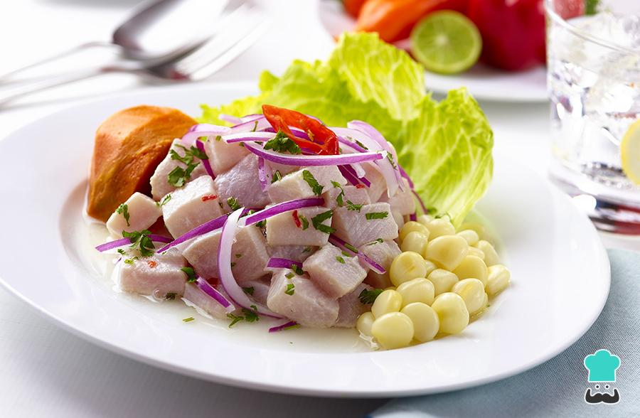

Peruvian Ceviche

Description
This is the most important and well known dish in peruvian cuisine. An interesting combination with a delightful taste. (8 servings)
Ingredients
- 2 potatoes
- 2 sweet potatoes
- 1 red onion, cutted into thin strips
- 1 cup of fresh lime juice
- 1/2 stalk celery sliced
- 1/4 cup of lightly packed cilantro leaves
- 1 pinch of ground cumin
- 1 clove of garlic, minced
- 1 habanero pepper, seeded and minced
- salt and pepper to taste
- 2 pounds of fresh tilapia, cut into 1/2 inch pieces
- 1 lettuce, separated into leaves
Steps
- Place the potatoes and sweet potatoes in a saucepan and cover with water. Simmer until the potatoes are easily pierced with a fork, then drain, and set aside to cool to room temperature.
- Place the sliced onion in a bowl of warm water, let stand 10 minutes, then drain and set aside.
- Meanwhile, place the lime juice, celery, cilantro, and cumin into the bowl of a blender, and puree until smooth. Pour this mixture into a large glass bowl, and stir in the garlic and habanero pepper. Season with salt and pepper, then stir in the diced tilapia.
- Set aside to marinate for an hour, stirring occasionally. The seafood is done once it turns firm and opaque.
- To serve, peel the potatoes and cut into slices. Stir the onions into the fish mixture. Line serving bowls with lettuce leaves. Spoon the ceviche with its juice into the bowls and garnish with slices of potato.